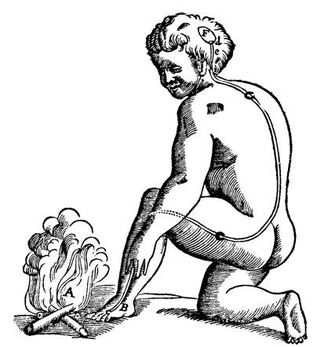

Menneskesyn, teknologisyn og bioteknologiens etikk
Tenk! Del 3 (kap. 12–13) · Solberg og Hofmann, «Bioteknologiens etikk»
Bygd opp etter forelesningsarbeidet (FLA 41): én del per spørsmål
På egen PC: gå til Canvas-siden min, så «Forside for forelesningene mine» · Pil ned: neste slide i delen · O: oversikt over alt
Uke 40: naturen som maskin. Descartes: kroppen også, som refleksen viser. Men tankene og viljen? I dag tre spørsmål om hva et menneske er:
| Menneskesyn FLA 1–3 | Er mennesket en maskin? Fri vilje, bevissthet, smerte |
| Teknologisyn FLA 4–6 | Er vi blitt kyborger? Teknologien former oss |
| Bioteknologi FLA 7–10 | Skal vi lage mennesker? Mehmet-saken, gentester, CRISPR |

Descartes, «L'Homme» (1664)
Public domain
Lagquiz til slutt: bli med her (åpnes i ny fane, på PC eller mobil)
Klikk for å gå dit. Tilbake hit: lenken øverst til høyre på hvert spørsmål.
I begrepslisten definerte du «determinisme», «kompatibilisme» og «inkompatibilisme». Har vi fri vilje? Diskutér styrker og svakheter ved disse tre teoriene.
Hvor i pensum: Tenk! kap. 12, avsnitt 12.1 «Har vi fri vilje?»
Begrepslisten: determinisme, kompatibilisme og inkompatibilisme («Menneskesyn og teknologisyn»)
Se etter i teksten: Hobbes og møllen; hva inkompatibilistene krever i tillegg; hva hard determinisme betyr for moralsk ansvar
Kari har vært avhengig av opioider i ti år. Hun sier at hun vil slutte, men sprekker igjen og igjen. Avhengighet kalles i dag ofte en hjernesykdom (uke 40, verdier i kategoriene).
Inga: «Alle hendelser er fullt ut årsaksbestemte. Utøya-terroristen kunne ikke ha handlet annerledes, gitt gener, oppvekst og andre faktorer utenfor hans kontroll. Men han handlet likevel av fri vilje: han handlet uhindret, helt i tråd med sine ønsker og sin oppfatning av situasjonen.» Hvordan er det mest nærliggende å beskrive synet til Inga?
Tenk! ss. 173–4
I begrepslisten forklarte du forskjellen mellom identitetsteori og funksjonalisme. Funksjonalisme er en omstridt teori i vitenskapene om kognisjon og bevissthet. Hvordan kunne en funksjonalist argumentert for at KI-systemer kan være bevisst? Kan funksjonalisme forklare hvordan slike systemer kunne oppleve smerte?
Hvor i pensum: Tenk! kap. 12, avsnitt 12.3 «Fysikalisme» og 12.4 «Funksjonalisme: Sinnet kan realiseres på ulike måter»
Begrepslisten: fysikalisme, identitetsteori og funksjonalisme, det kinesiske rommet
Se etter i teksten: smerte som funksjon (input, output); multippel realisering; maskinfunksjonalisme; Turingtesten; Searles innvending
2022: Google-ingeniøren Blake Lemoine mente at chatboten LaMDA var bevisst. Den skrev blant annet at den var redd for å bli slått av. Google avviste påstanden, og han ble sagt opp.
Lars om roboten Ava i «Ex Machina»: «Hun er ikke av biologisk materiale, men hun reagerer, føler og svarer slik vi gjør. Altså har hun bevissthet som oss.» Hvilket syn på bevissthet reflekterer dette?
Tenk! ss. 180–3
Du har forklart Mary-tankeeksperimentet i begrepslisten. Tenk på et helseeksempel i denne sammenhengen: Kan en sykepleier som vet alt om smertefysiologi, vite hvordan det er for pasienten å ha vondt? (Knytt gjerne opp mot skillet fra forrige uke mellom det å forklare og det å forstå!)
Hvor i pensum: Tenk! kap. 12, avsnitt 12.5 «Førstepersonsperspektivet og det vanskelige bevissthetsproblemet». Forklare og forstå: uke 40, Thomassen
Begrepslisten: Mary-tankeeksperimentet
Se etter i teksten: kunnskapsargumentet i tre trinn; førstepersonsperspektivet; forklaringsgapet
Sykepleieren Mari kan smertefysiologien: nociseptorer, ryggmarg, hjerne, smertestillende. Pasienten sier: «Det er en 8 av 10.»
Fysikalister mener at opplevelser, som å føle smerte eller se rødt, bare er fysiske prosesser i nervesystemet. Hva er en rimelig framstilling av Frank Jacksons innvending?
Tenk! s. 185
Hva innebærer uttrykket «teknologiens tosidighet»?
Hvor i pensum: Tenk! kap. 13, avsnitt 13.1 «Teknologiens tosidighet» og 13.6 «Teknologibevissthet»; teknologisynene i 13.2
Begrepslisten: teknologisk instrumentalisme og determinisme, det relasjonelle teknologisynet, Heideggers teknologisyn, sosioteknisk nettverk
Se etter i teksten: muligheter og utfordringer; virkninger som «unnslipper regulering»; ikke nøytral, men heller ikke god eller dårlig i seg selv
KI hjelper legen å finne forstadier til tarmkreft under koloskopi. En studie fra Polen (2025): etter at KI var tatt i bruk, fant legene færre forstadier når de undersøkte uten KI (fra 28 til 22 %).
Hva menes med «teknologiens tosidighet» i Tenk!?
Tenk! ss. 196–7, 212
Hva var Platons kritikk av skrivekunsten? Gi eksempler på lignende kritikk mot andre teknologier. Nevn noen mulige innvendinger mot slik kritikk.
Hvor i pensum: Tenk! kap. 13, avsnitt 13.3 «Mennesket og teknologien», delene «Bør vi frykte den teknologiske påvirkningen?» og «Kan vi bedømme morgendagens teknologi i dag?»
Begrepslisten: Stiegler (under det relasjonelle teknologisynet)
Se etter i teksten: Thamus i «Faidros»; Turkle om sosiale medier; skråplansargument; morgendagens teknologi med dagens verdier
Tenk! drøfter Platons kritikk av skrivekunsten. Hvilken innvending mot slik kritikk av ny teknologi kommer boka med?
Tenk! ss. 202–4
Pensum nevner noen etiske utfordringer ved kunstig intelligens. Hvilke er disse, og kan du komme på noen flere? Tenk gjerne på KI i helsetjenesten.
Hvor i pensum: Tenk! kap. 13, avsnitt 13.5 «En aktuell teknologisk utfordring: kunstig intelligens», delen «Noen etiske utfordringer med kunstig intelligens»
Se etter i teksten: skjeve data (Tay, risikoalgoritmen); misinformasjon; overvåking; ansvar; filterbobler; tillit; personvern
IBMs KI-system Watson for Oncology skulle legge opp behandlingen for kreftpasienter. På Rigshospitalet i København ble det stoppet: det foreslo behandlinger som kunne tatt livet av pasienten.
Et sykehus tar i bruk en KI som skal finne hudkreft på bilder. Den er trent mest på bilder av lys hud, og bommer oftere hos pasienter med mørk hud. Hvilken etisk utfordring ved KI fra pensum illustrerer dette best?
Tenk! ss. 210–2
Hvorfor reiser medisinsk bruk av bioteknologi ofte flere og vanskeligere spørsmål enn det medisinsk bruk av mange andre typer teknologi gjør? Er du enig i at etiske spørsmål innen bioteknologi bør være gjenstand for grundig etisk og politisk behandling?
Hvor i pensum: Solberg og Hofmann, «Bioteknologiens etikk»: innledningen (Mehmet-saken), «Hva mener vi med «bioteknologi»?» og avslutningen
Begrepslisten: assistert befruktning («Sykdomsbegrepet, prioritering, bioteknologiens etikk»)
Se etter i teksten: «grenseoverskridende»; den politiske arenaen framfor klinikken; «teknikken gikk foran etikken»; når etikkteoriene kommer til kort
Mehmet, 7 år, hadde en alvorlig arvelig blodsykdom. Kuren: stamceller fra et nytt søsken med riktig vevstype, laget ved prøverørsbefruktning og testing av embryoene. Loven ble endret i rekordfart, og en regjering holdt på å falle. Moren aborterte spontant, og Mehmet fikk aldri søskenet.
Hvorfor har diskusjonene om medisinsk bruk av bioteknologi ofte foregått på den politiske arenaen framfor i klinikken, ifølge Solberg og Hofmann?
Solberg og Hofmann s. 151
Prediktiv geninformasjon (du har definert «retten til å vite / retten til ikke å vite» i begrepslisten):
Hvor i pensum: Solberg og Hofmann, «Gentesting av fødte: retten til å vite og retten til ikke å vite» og «Oppsøkende genetisk virksomhet»
Begrepslisten: retten til å vite og retten til ikke å vite
Se etter i teksten: prediktiv gentest; retten til en åpen framtid; genetisk veiledning; hvorfor Norge er restriktivt med å kontakte slekta
Sara får vite at hun har en genvariant (BRCA1) som gir høy risiko for bryst- og eggstokkreft. Søstrene hennes kan ha den samme.
En person får vite gjennom genetisk testing at hen bærer på et genmateriale som gir høy risiko for en alvorlig arvelig sykdom som også kan ramme søsken og barn. Hvilket etisk dilemma og hvilken rettighet står sentralt?
Solberg og Hofmann ss. 154–6
Tenker du at det er en god idé å bruke CRISPR-Cas9 til å skreddersy genmaterialet til fremtidige mennesker? Er det forskjell på å bruke denne teknologien til å fjerne sykdom og å bruke den til å utvikle smartere eller høyere mennesker? Hvor går grensen mellom akseptabel og uakseptabel bruk av CRISPR-Cas9?
Hvor i pensum: Solberg og Hofmann, «Genredigering og spørsmålet «hva er et menneske?»» og «Det bioteknologiske mennesket»; fravalg og tilvalg under «Preimplantasjonsgenetisk testing (PGT)»
Begrepslisten: fravalg og tilvalg, preimplantasjonsgenetisk testing (PGT), transhumanisme
Se etter i teksten: fravalg og tilvalg; endringer som går i arv; terapi eller forbedring; hvem bestemmer hva som er «bedre»?
Casgevy (godkjent i EU 2024): pasientens egne stamceller redigeres med CRISPR og settes tilbake. Brukes mot betatalassemi og sigdcellesykdom: Mehmets sykdom, uten redningssøsken. 2018: tvillingene Lulu og Nana ble genredigert som embryoer i Kina.
Et par med arvelig muskelsykdom i familien vil ha PGT, og samtidig velge embryo med ønskede egenskaper utover å unngå sykdom. Hvilket etisk prinsipp og problemstilling reiser dette?
Solberg og Hofmann ss. 153–4
Har vi plikt til å gjøre godt mot dem som ikke finnes? Sammenlign ansvaret vi har for å skape gode liv overfor ufødte barn (for eksempel et nedfrosset egg eller en sædcelle i en sædbank) med ansvaret vi har overfor kommende generasjoners gode liv (for eksempel i spørsmålet om klimaendringer). Hva er de relevante likhetene og ulikhetene? Dette spørsmålet kan relateres til seksjon 7 («Dydsetikk i praksis») i kapittel 18 i Tenk!
Hvor i pensum: Solberg og Hofmann, «Hvordan gjøre godt mot dem som ikke finnes?»; Tenk! kap. 18, avsnitt 18.7 «Dydsetikk i praksis» (miljøetikk)
Se etter i teksten: barnets beste; legene som «medskapere»; en dydsetisk tolkning; dydsetisk miljøetikk (Hill, Sandler)
Før assistert befruktning må paret levere politiattest (barneomsorgsattest), og legen gjør en psykososial vurdering. Begrunnelsen er barnets beste. Men barnet finnes ikke ennå.
Solberg og Hofmann spør: «Hvordan gjøre godt mot dem som ikke finnes?» Hva er problemet med å bruke «hensynet til barnets beste» når legen vurderer assistert befruktning?
Solberg og Hofmann s. 153
Tenk! Solberg og Hofmann
Alle begrepene er forklart i FLA-delene ovenfor. NB: begrepslisten har dem under «uke 38» og «uke 43», utdatert i forhold til årets undervisningsplan.
Denali fra Primrose Ridge. Foto: Patsy Lewis, CC BY-SA 3.0